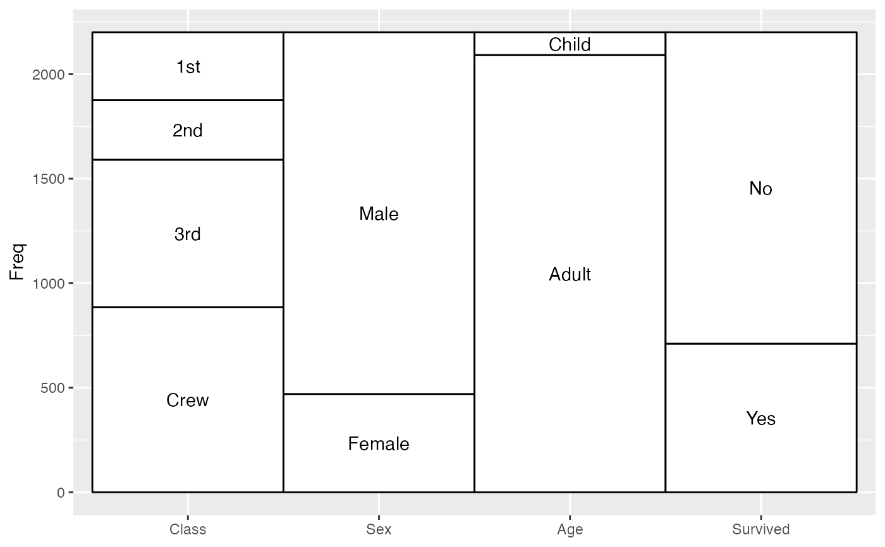
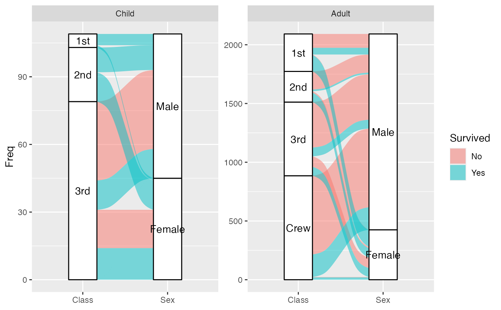

geom_stratum receives a dataset of the horizontal (x) and vertical (y,
ymin, ymax) positions of the strata of an alluvial plot. It plots
rectangles for these strata of a provided width.
Usage
geom_stratum(
mapping = NULL,
data = NULL,
stat = "stratum",
position = "identity",
show.legend = NA,
inherit.aes = TRUE,
width = 1/3,
na.rm = FALSE,
...
)Arguments
- mapping
Set of aesthetic mappings created by
aes(). If specified andinherit.aes = TRUE(the default), it is combined with the default mapping at the top level of the plot. You must supplymappingif there is no plot mapping.- data
The data to be displayed in this layer. There are three options:
If
NULL, the default, the data is inherited from the plot data as specified in the call toggplot().A
data.frame, or other object, will override the plot data. All objects will be fortified to produce a data frame. Seefortify()for which variables will be created.A
functionwill be called with a single argument, the plot data. The return value must be adata.frame, and will be used as the layer data. Afunctioncan be created from aformula(e.g.~ head(.x, 10)).- stat
The statistical transformation to use on the data; override the default.
- position
Position adjustment, either as a string naming the adjustment (e.g.
"jitter"to useposition_jitter), or the result of a call to a position adjustment function. Use the latter if you need to change the settings of the adjustment.- show.legend
logical. Should this layer be included in the legends?
NA, the default, includes if any aesthetics are mapped.FALSEnever includes, andTRUEalways includes. It can also be a named logical vector to finely select the aesthetics to display.- inherit.aes
If
FALSE, overrides the default aesthetics, rather than combining with them. This is most useful for helper functions that define both data and aesthetics and shouldn't inherit behaviour from the default plot specification, e.g.borders().- width
Numeric; the width of each stratum, as a proportion of the distance between axes. Defaults to 1/3.
- na.rm
Logical: if
FALSE, the default,NAlodes are not included; ifTRUE,NAlodes constitute a separate category, plotted in grey (regardless of the color scheme).- ...
Additional arguments passed to
ggplot2::layer().
Aesthetics
geom_alluvium, geom_flow, geom_lode, and geom_stratum understand the
following aesthetics (required aesthetics are in bold):
xyyminymaxalphacolourfilllinetypesizegroup
group is used internally; arguments are ignored.
Alluvium, flow, and lode geoms default to alpha = 0.5. Learn more about
setting these aesthetics in vignette("ggplot2-specs", package = "ggplot2").
Defunct parameters
The previously defunct parameters axis_width and ribbon_bend have been
discontinued. Use width and knot.pos instead.
See also
ggplot2::layer() for additional arguments and
stat_stratum() for the corresponding stat.
Other alluvial geom layers:
geom_alluvium(),
geom_flow(),
geom_lode()
Examples
# full axis width
ggplot(as.data.frame(Titanic),
aes(y = Freq,
axis1 = Class, axis2 = Sex, axis3 = Age, axis4 = Survived)) +
geom_stratum(width = 1) +
geom_text(stat = "stratum", aes(label = after_stat(stratum))) +
scale_x_discrete(limits = c("Class", "Sex", "Age", "Survived"))

# use of facets
ggplot(as.data.frame(Titanic),
aes(y = Freq,
axis1 = Class, axis2 = Sex)) +
geom_flow(aes(fill = Survived)) +
geom_stratum() +
geom_text(stat = "stratum", aes(label = after_stat(stratum))) +
scale_x_discrete(limits = c("Class", "Sex")) +
facet_wrap(~ Age, scales = "free_y")
